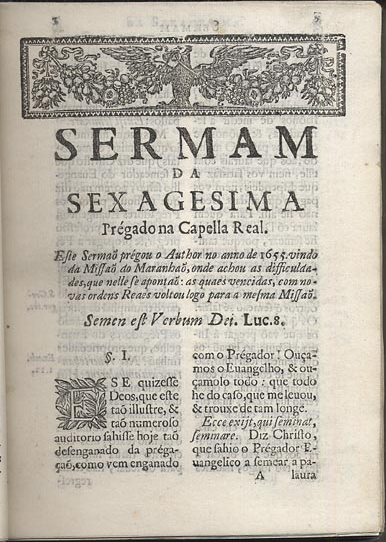
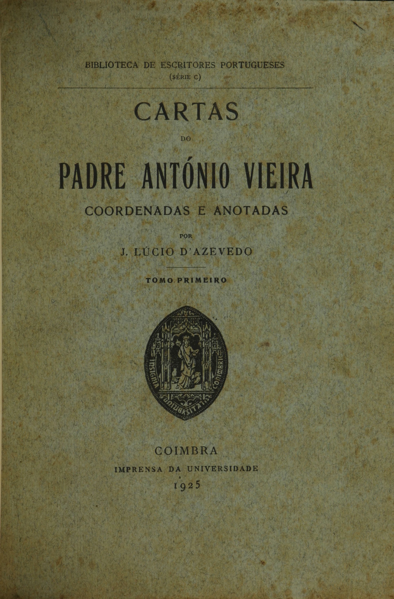
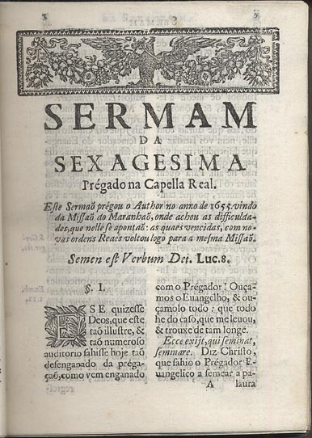
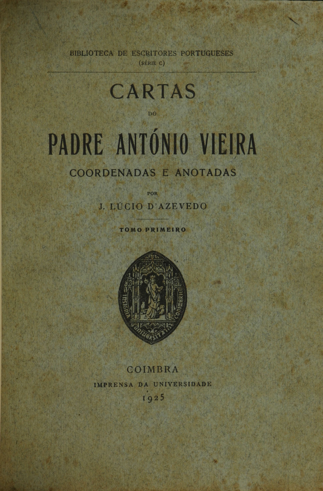

Principais Obras
Sermão da Sexagésima:
Uma das obras mais famosas, onde Padre Vieira discute a eficácia da pregação religiosa.
Cartas:
Coletânea de correspondências abordando temas políticos, sociais e religiosos.

Uma das obras mais famosas, onde Padre Vieira discute a eficácia da pregação religiosa.
Coletânea de correspondências abordando temas políticos, sociais e religiosos.
